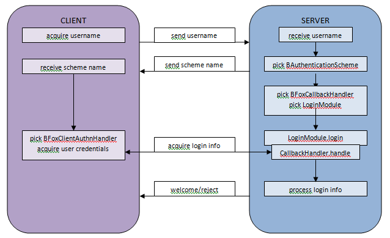

In Niagara 4, the Authentication Service manages how users can log in to the station. It supports using multiple Authentication Schemes at once, so that different users can log in using different methods appropriate to the type or sensitivity of the account. Developers can create additional Authentication Schemes if desired.
In Niagara 4, all authentication (that is, how users prove who they are to the station) is managed by the Authentication Service. In a Niagara 4 station, all authentication requests are routed through the Authentication Service. The types of authentication a station supports (both for fox and web) is determined solely by the Authentication Service. This results in a more robust authentication framework. Functionality that can be centralized is handled by the service itself, avoiding duplication of code. Functionality that cannot be centralized is handled by specialized handlers, which can be reused.
In this section, we describe how the Authentication Service works, and what steps are required to create new authentication schemes.
The most important element of the Niagara 4 Authentication Service is the Authentication Scheme. An Authentication Scheme determines how the client authenticates to the server. For example, with the HTTPBasicAuthenticationScheme, a username and password are sent over in plaintext; with the DigestAuthenticationScheme, multiple messages are passed back and forth to prove the client knows the password, without ever actually sending the password.
A station can support multiple authentication schemes. Each user account is tied to a specific scheme. This allows more sensitive accounts to use a more secure scheme (e.g. digest or two-factor), while still allowing other accounts to use other schemes such as LDAP. This is done via the authenticationSchemeName property on the BUser, which allows you to choose any Authentication Scheme configured in the Authentication Service and assign it to that user.
New schemes are added to the Authentication Service and configured as needed (e.g. the LDAP scheme will require certain parameters like the URL of the LDAP server to which you wish to connect). Only schemes added to the Authentication Service are supported by that station.
In this section, we’ll discuss how to set up a station to use the Authentication Service.
Each station needs an Authentication Service. New stations are created with an AuthenticationService already in the “Services” container. If you have accidentally removed the AuthenticationService, you can manually add one from the “baja” palette into the “Services” container.
A station may support multiple Authentication Schemes. Which ones you want depends entirely on what you need your station to do.
Authentication Schemes should be added to the AuthenticationService’s AuthenticationSchemes folder. Only schemes in that folder are supported by the station.
Each station is created with the DigestAuthenticationScheme and AXDigestAuthenticationScheme in the AuthenticationSchemes folder. This way, any Niagara 4 station can do digest authentication with both N4 and AX clients.
Additional Schemes can be found in the baja and ldap palettes. Schemes may be added or removed from the AuthenticationSchemes folder, but be aware that removing a scheme may leave your users with an invalid reference to a non-existent scheme, and unable to log in.
In Niagara 4, each user is assigned its own AuthenticationScheme. This allows different users to use different schemes appropriate to the user type. For example, the DigestScheme is appropriate for human users, whereas the HTTPBasicScheme is more appropriate for devices that can’t do digest.
A user’s AuthenticationScheme can be changed via the user’s authenticationSchemeName property in the user’s property sheet. Simply select the desired scheme from the drop down list.
Once these setup steps are complete, the station should be ready for authentication. Note that by default, each new station comes with the Digest scheme installed, which is assigned to all users by default, so that in simple cases no additional setup is required.
When creating a new authentication scheme, there are a few things to take into consideration:
For each new authentication scheme created, a number of handlers may also need to be created to ensure that communication is possible between the client and the server. In this section, we will go over all the different objects that must be created when implementing a new authentication scheme.
BAuthenticationScheme subclassLoginModuleBAuthenticationScheme building blocks
CallbackHandlersEach new authentication scheme must be a subclass of BAuthenticationScheme. A BAuthenticationScheme is essentially a wrapper for a JAAS (Java Authentication and Authorization Service) LoginModule. Each subclass must implement the following methods:
getSchemeName(). This should return a String containing a unique name for the authentication scheme (e.g. “n4digest” or “n4HTTPBasic”). This name will be used by the server to inform the client which scheme is being used.getLoginConfiguration(). This should return a JAAS login Configuration that indicates which login module(s) to use, whether they are required, and what options to use. In most cases, a new NiagaraLoginConfiguration can be created with the appropriate LoginModule name, the LoginModuleControlFlag.REQUIRED flag, and whatever options are appropriate to the scheme (e.g. LDAP server name).BAuthenticationScheme subclasses must also be declared as agents on BAuthenticationScheme.
One of the most important pieces of a new Authentication Scheme is its corresponding JAAS LoginModule. The LoginModule decides what information it needs from the user, delegates the task of acquiring it to the various handlers described in step 3, and then processes that information to determine whether authentication was successful or not.
For example, an authentication scheme for a basic authentication scheme could acquire the username and password from the user, and then compare the password to the stored hash to determine if the supplied password was correct. An LDAP scheme, on the other hand, might acquire the username and password from the user in the same way, but would then turn around and authenticate to the LDAP server rather than compare to an internally stored password.
A full discussion of how to create a JAAS LoginModule is beyond the scope of this document. For more information, see Oracle’s LoginModule Developer’s Guide.
In order to keep BAuthenticationSchemes modular and easily extensible, authentication functionality is separated into a number of building blocks. Each building block provides a different piece of completely self-contained functionality.
Depending on what you want your BAuthenticationScheme to support, some of the building blocks may not be required. For example, an Authentication Scheme meant only to be used only over fox does not need any of the web building blocks. Note that this would mean that users using this scheme would not be able to log in via the web.
The building blocks are described in the following sections, grouped by functionality.
As mentioned in Step 2, the LoginModule delegates the task of acquiring user information to a JAAS CallbackHandler. In essence, the LoginModule doesn’t care how the information it needs is acquired, so long as it is acquired. Different CallbackHandlers can acquire the same information in different ways.
This is particularly important for Niagara – it means that the same LoginModule can be used for both fox and web authentication, or any other protocol we might want to use. The only thing that needs to be added is a new CallbackHandler for each required protocol. It also means that different LoginModules that happen to require the same information can get it using the same CallbackHandlers, and can then process it differently.
In Niagara 4, we have two CallbackHandler superclasses defined, one for fox (BFoxCallbackHandler) and one for web (BWebCallbackHandler). Each BAuthenticationScheme must be associated to a subclass of these in order for authentication over that protocol to be possible.
For BAuthenticationSchemes intended to communicate over Fox, both the BFoxCallbackHandler and BFoxClientAuthnHandler must be implemented.
All CallbackHandlers intending to acquire information over fox for a scheme’s LoginModule must be a subclass of BFoxCallbackHandler. Each subclass must implement JAAS’s CallbackHandler.handle(Callback[] callbacks) method, which will send and receive messages over fox to acquire information from the client, and fill in the callbacks array with the appropriate information.
It may override BFoxCallbackHandler.init(FoxSession session), which is called before starting the LoginModule login process. If it is overridden, super(session) must be called, as it ties the BFoxCallbackHandler to a specific FoxSession, allowing it to send messages to the client.
To associate a BFoxCallbackHandler to a specific BAuthenticationScheme, it must be declared as an agent on that scheme.
The BFoxClientAuthnHandler is the client counterpart to the server’s BFoxCallbackHandler. Although the client doesn’t specifically need a CallbackHandler (which is only required for JAAS LoginModules), it does need to know what messages to expect from the server and how to respond to them. Therefore, each new BAuthenticationScheme must be associated with a subclass of BFoxClientAuthnHandler, which is “paired” to a BFoxCallbackHandler.
Subclasses of BFoxClientAuthnHandler must implement handleAuthentication(FoxSession session, BICredentials credentials), which is responsible for sending and receiving messages over fox, to give the station the information it needs for authentication. The messages it receives should correspond to the messages sent by the corresponding BFoxCallbackHandler, and vice-versa.
To associate a BFoxClientAuthnHandler to a specific BAuthenticationScheme, it must be declared as an agent on that scheme.
If your BAuthenticationScheme will be used for users logging in via Workbench, a BWbDialogHandler must be created.
Different BAuthenticationSchemes may require the user to supply different credentials. For example, digest authentication requires only a username and password. Two-factor authentication, on the other hand, requires a username and password, as well as an additional token. Workbench needs to know which dialog to present to the user in order to collect the appropriate information.
The BWbDialogHandler is responsible for building the appropriate dialogs when Workbench attempts to log in to a station.
Subclasses of BWbDialogHandler must implement getPaneForStep(AuthenticationRealm realm, int step, BIObject seedInfo), which constructs and returns an appropriate BCredInputPane for the given authentication step. While many authentication schemes will only have a single step, some may require multiple passes to enter additional credentials; since these steps may require different credentials from the user, a different pane can be built for each step.
The BIObject seedInfo argument can be used to pre-populate the pane. For example, if the username and password have previously been stored, they can be pre-filled for the user.
If your BAuthenticationScheme is meant for users who will be logging in via the web interface, a BWebCallbackHandler must be implemented. For users logging in via the browser, a BILoginHTMLForm must be implemented.
All CallbackHandlers intending to acquire information over HTTP for a scheme’s LoginModule must be a subclass of BWebCallbackHandler. Each subclass must implement BWebCallbackHandler.handleRequest(HttpServletRequest req, HttpServletResponse resp), which is responsible for acquiring information from the user by processing HTTP requests and sending HTTP responses.
Each subclass must also implement JAAS’s CallbackHandler.handle(Callback[] callbacks) method, which uses the data acquired from the user in handleRequest() to fill in the callbacks array.
Note that the mechanism for acquiring information is slightly different for BFoxCallbackHandler and BWebCallbackHandler. While fox allows us to send multiple messages within a single call to handle(Callback[] callbacks), the servlet request handling process does not allow us to make multiple requests and responses within a single method. Since LoginModules don’t support a partial login process, we are forced to gather all the user information before we start the login process at all. Therefore, handleRequest() will continue to be called until it returns a state of BWebCallbackHandler.READY, indicating that it has all the information it needs to process a handle() call, at which point the LoginModule’s login process will begin.
To associate a BWebCallbackHandler to a specific BAuthenticationScheme, it must be declared as an agent on that scheme.
Just as we need to let a fox client know how to handle fox authentication messages, we also need to ensure that a web client knows what information to acquire from the user, how to acquire it, and how to send it back to the server. We do this by ensuring that each BAuthenticationScheme can create its own customizable HTML login form – each BAuthenticationScheme must be associated with a class implementing the BILoginHTMLForm interface.
Classes implementing the BILoginHTMLForm interface must implement the getLoginFormHTML(Context context) method. This method is responsible for creating an HTML snippet containing any input fields, buttons, or additional information the login form might require. The context argument can be used to pass in a Locale, or any other customizable information supported by the BILoginHTMLForm (BDigestLoginHTMLForm, for example, allows the username, password and login labels to be customized via the context argument).
To associate a BILoginHTMLForm to a specific BAuthenticationScheme, it must be declared as an agent on that scheme.
If you intend to support the HTTP Header Authentication Mechanism in your BAuthenticationScheme, you must create a callback handler that is a subclass of BHttpHeaderCallbackHandler.
This CallbackHandler behaves very similar to the BWebCallbackHandler, the only differences being that a BHttpHeaderCallbackHandler will only be used when the client starts the authentication process with a HELLO message, and the CallbackHandler should exchange authentication information using only the headers described in HTTP Header Authentication Mechanism.
To associate a BHttpHeaderCallbackHandler to a specific BAuthenticationScheme, it must be declared as an agent on that scheme.
This figure outlines the login process over fox, and how the various pieces (BAuthenticationScheme, LoginModule, BFoxCallbackHandler and BFoxClientAuthnHandler) fit together.

In Niagara AX, authentication is handled by a number of different services and agents. The Fox Service, Web Service and User Service all determine in part what type of authentication the station supports. Not all possible configurations are valid, and this can lead to confusion and reduced security. What’s more, because authentication is handled in so many different places, the authentication system tends to be fairly fragile.
In Niagara 4, the authentication model has been changed so that all authentication functionality goes through a single service, the Authentication Service. This helps centralize common functionality like auditing or approving or rejecting authentication, and allows us to easily create and integrate new authentication schemes.
For more information about the Niagara 4 Authentication Service, view the Authentication Service Model section. As a result of these changes, some modifications were made to the API. These are described below.
Any custom authentication implementation using BAuthAgents or subclasses of BUserService will be affected.
A number of things have changed with the new Authentication Service implementation:
BAuthAgents are no longer used for authentication. Any implementation of a BAuthAgent will need to be refactored into the appropriate BFoxCallbackHandler, BWebCallbackHandler, BFoxClientAuthHandler and BILoginHTMLForm components.BAuthAgents have been removed. Any code that uses or implements BAuthAgent will not compile.BUserService.getAuthAgent() and BUserService.authenticateBasic() have been removed.authenticationPolicy and legacyAuthentication properties has been removed from BFoxService.authenticationScheme property has been removed from BWebService.javax.baja.web.BAuthenticationType has been removed.BUserService if an alternate authentication scheme is desired.Any custom BAuthAgent should be replaced by the various components described in the Authentication Service Model section.
Subclasses of BUserService are no longer required to implement alternate authentication schemes. Authentication specific elements of the BUserService subclasses should be moved to the appropriate BAuthenticationScheme component (e.g. the scheme’s LoginModule).